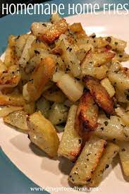

Spicy Breakfast Potatoes

Breakfast style potatoes with a nice spicy kick!
Great for breakfast, or anytime you want to get a kick out of your potatoes!
Ingredients
- 2 lbs russet potatoes
- 2 medium serrano or jalapeno peppers
- 1/2 large yellow onion
- 2 tbl olive oil
- 2 tbl diced garlic
- 2 tsp sea salt
- 2 tsp black pepper
Steps
- Cut potatoes into roughly 3/4 inch pieces
- Place diced potatoes in microwave safe bowl. Microwave on 80% power for 4 minutes.
- Dice onion and chile pepper of choice into roughly 1/4 pieces.
- Heat 1 tbl olive oil in skillet on medium heat
- Place onion and chile pepper into heated skillet. Cook for 3-4 minutes, until onions start to become opaque.
- Add garlic to the skillet.
- Add 1 tbl olive oil to skillet. Add potatoes, salt, and black pepper.
- Cook for 12-15 minutes, until potatoes are easy to pierce with a fork.